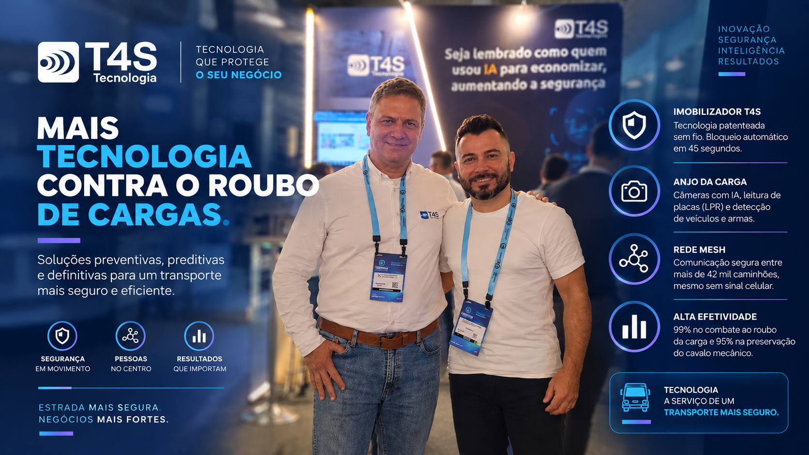

A T4S ataca a fragilidade dos bloqueios tradicionais: fio cortado, sistema desarmado, caminhão liberado em minutos.
A T4S é uma empresa de inovação focada no combate ao roubo de cargas e veículos pesados, aplicando inteligência artificial e tecnologias patenteadas para ações preventivas e preditivas antes que o sinistro se concretize.
Sem fio, sem chance de desarme rápido
O Imobilizador T4S atinge 99% de efetividade na preservação da carga e 95% na recuperação do caminhão. O grande diferencial é que o dispositivo não possui conexão física com o chicote elétrico principal, impedindo que criminosos desarmem o sistema em segundos.
Se o jammer entra em ação, o caminhão trava sozinho.
Ao detectar a interferência do jammer, o T4S bloqueia o veículo automaticamente em no máximo 45 segundos. Se um caminhão perde o sinal celular GPRS, qualquer outro dos mais de 42 mil caminhões rodando com T4S no Brasil que passe em um raio de até 3 km captura o sinal e transmite a localização exata do veículo roubado.
Câmera que reconhece arma antes da abordagem
O Anjo da Carga foi desenvolvido para frotas de alto valor agregado e utiliza câmeras com IA para detecção autônoma de armas: câmeras laterais identificam pessoas armadas se aproximando do caminhão e sobem alerta imediato.
Raio-X: T4S Tecnologia
- O que é?
- Empresa de engenharia focada em imobilizadores patenteados e visão computacional contra roubo de cargas.
- Qual problema resolve?
- Vulnerabilidade dos bloqueios tradicionais, desarmados com corte de fio, e ausência de detecção preditiva de ameaça.
- Qual a principal inovação?
- Imobilizador sem conexão física com o chicote elétrico, com rede Mesh entre mais de 42 mil caminhões no Brasil.
- Para onde vai?
- Monitoramento volumétrico do baú e checagem biométrica facial contínua em bancos de dados externos.